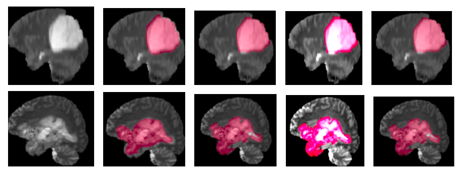
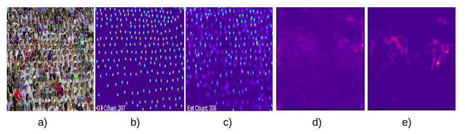
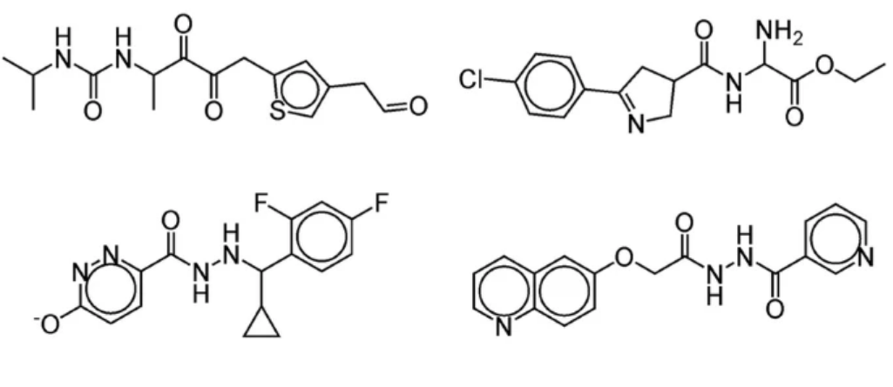
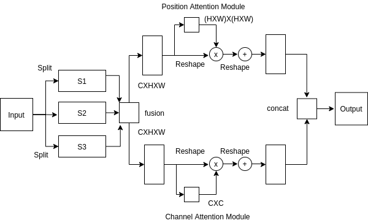

|
Abhinav Sagar
Email: abhinavsagar4@gmail.com
Address: 64 Greens Radius Developers, Santacruz, Mumbai, India

Hi! I completed my undergrad in Mechanical Engineering at Vellore Institute of Technology.
My research areas are generative models, medical imaging and autonomous driving.
More broadly, I am interested in deep learning and computer vision.
The communities I follow are NeurIPS, CVPR, ICCV, ECCV, BMVC, WACV and MICCAI.
If you are interested in doing a research collaboration, please contact me.
My hobbies are travelling, playing guitar and cooking (also eating).
[24th July 2021] Presenting 2 papers at Workshop on Distribution-Free Uncertainty Quantification at ICML 2021.
[31st May 2021] 1 paper accepted at Workshop on Artificial Intelligence for Autonomous Driving at IJCAI 2021.
[23th May 2020] Successfully defended my bachelors thesis.
[5th Dec 2019] Will be assisting Professor Madhu Viswanatham as teaching assistant for course CSE1002 (Object Oriented Programming).
[14th Sep 2019] Speaking on Automated Machine Learning at RMZ Millenia Business Park in Chennai, India.
[2nd Dec 2018] Will be assisting Professor Gayathri P as teaching assistant for course CSE2003 (Data Structures and Algorithm).
[6th Oct 2018] Speaking on Ethics of Artificial Intelligence at Channa Reddy Auditorium in Vellore, India.
Research Papers and Preprints
Uncertainty Quantification using Variational
Inference for Biomedical Image Segmentation
Paper |
Code |
BibTeX

Semantic Segmentation With Multi Scale Spatial
Attention For Self Driving Cars
Paper |
Code |
BibTeX

Bayesian Multi Scale Neural Network for Crowd
Counting
Paper |
Code |
BibTeX

Monocular Depth Estimation Using Multi Scale
Neural Network And Feature Fusion
Paper |
Code |
BibTeX

Generate Novel Molecules With Target Properties
Using Conditional Generative Models
Paper |
Code |
BibTeX

DMSANet: Dual Multi Scale Attention Network
Paper |
Code |
BibTeX

|